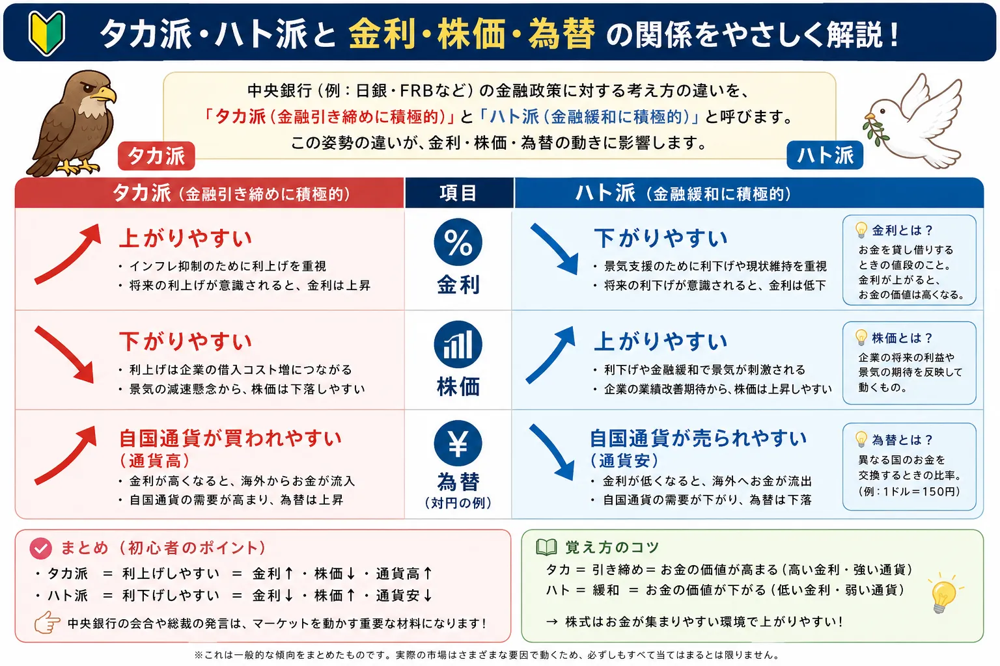

話題・トレンド
タカ派・ハト派とは？中央銀行の発言で株価や為替が動く理由を初心者向けに解説
FRBや日銀のニュースでは、「タカ派」「ハト派」「利下げに慎重」「金融引き締め寄り」といった表現が頻繁に登場します。これらは中央銀行関係者が、インフレと景気・雇用のどちらをより警戒しているかを読み取るための言葉です。市場は現在の金利だけでなく「これから金利がどうなるのか」を先回りして動くため、政策変更がなくても発言だけで国債・株価・為替が大きく反応することがあります。
Overview
タカ派・ハト派と金利・株価・為替の関係を最初に整理

- タカ派：インフレへの警戒が強く、金融引き締め寄りとみられやすい姿勢です。
- ハト派：景気や雇用への配慮が強く、金融緩和寄りとみられやすい姿勢です。
- ただし、人物を完全にタカ派・ハト派の2種類へ分類できるわけではありません。
- 経済状況が変化すれば、同じ中央銀行関係者でも発言内容は変わります。
- 市場では「発言そのもの」より、事前予想と比べてタカ派だったか、ハト派だったかが重要になる場合があります。
Definition
タカ派・ハト派とは？
タカ派・ハト派とは、中央銀行関係者や金融政策の姿勢を分かりやすく表現するために使われる言葉です。特定の正式な役職や制度上の分類ではありません。
タカ派
インフレ抑制をより重視する姿勢
物価上昇が続くリスクを強く警戒し、利上げや高い金利の維持など、金融引き締めに比較的積極的な姿勢を指します。「利下げを急ぐべきではない」といった発言も、状況によってはタカ派的と受け止められます。
ハト派
景気や雇用への配慮をより重視する姿勢
高い金利が景気や雇用を弱くするリスクにも目を向け、利下げや金融緩和に比較的前向きな姿勢を指します。「景気への下振れリスクに注意が必要」といった発言がハト派的に受け止められることがあります。
重要：「タカ派＝必ず利上げ」「ハト派＝必ず利下げ」という意味ではありません。例えば政策金利を据え置いた場合でも、将来の利下げに慎重ならタカ派的、将来の利下げに前向きならハト派的と評価されることがあります。
Origin
なぜ「タカ派」「ハト派」と呼ばれるの？
「タカ派（hawk）」と「ハト派（dove）」は、もともと政治や外交などで強硬な姿勢と穏健な姿勢を表すために使われてきた表現です。金融政策でも、そのイメージを使って政策姿勢を表します。
タカ
強い姿勢を連想させることから、物価上昇を抑えるための引き締めに積極的な姿勢を表します。
ハト
穏健な姿勢を連想させることから、景気や雇用への配慮を重視する緩和寄りの姿勢を表します。
善悪ではない
タカ派とハト派は「厳しい人」「優しい人」という善悪の分類ではありません。経済環境に対する政策判断の違いです。
Comparison
タカ派とハト派の違い
初心者のうちは「インフレをより警戒するのがタカ派」「景気・雇用への配慮が強いのがハト派」と整理すると分かりやすくなります。
| 比較項目 | タカ派 | ハト派 |
|---|---|---|
| 重視しやすいもの | 物価安定・インフレ抑制 | 景気・雇用への配慮 |
| インフレへの姿勢 | 物価上昇の長期化や再加速を警戒しやすい | インフレ低下の進展を評価しやすい |
| 景気・雇用への姿勢 | インフレ抑制のため一定の景気減速を受け入れる場合がある | 高金利による景気・雇用悪化を警戒しやすい |
| 金利への考え方 | 高い金利を維持・利上げする選択に比較的前向き | 金利を下げる・低く保つ選択に比較的前向き |
| 金融引き締め | 積極的になりやすい | 慎重になりやすい |
| 金融緩和 | 慎重になりやすい | 積極的になりやすい |
| 市場での受け止め方 | 将来の金利が高くなる・高止まりするとの予想につながる場合がある | 将来の金利が低くなるとの予想につながる場合がある |
※ スマートフォンでは横にスクロールできます。
実際の中央銀行関係者を永久に「タカ派」「ハト派」と分類できるわけではありません。インフレが急上昇すれば、それまでハト派的だった人物が引き締めを主張する場合もあります。反対に、景気や雇用が急速に悪化すれば、タカ派的だった人物が利下げを支持することも考えられます。
Interest Rates
タカ派＝利上げ、ハト派＝利下げなの？
結論から言えば、完全に同じ意味ではありません。タカ派・ハト派は、政策金利そのものではなく金融政策に対する姿勢を表す言葉だからです。
タカ派でも据え置きはある
「利下げしない」ことも引き締め的
インフレが高い状態で政策金利を据え置きながら、「利下げを急ぐ必要はない」「物価上昇への警戒を続ける」と発言すれば、市場ではタカ派的と受け止められる場合があります。
ハト派でも据え置きはある
利下げを示唆してもすぐ動くとは限らない
景気悪化への懸念を示していても、インフレがまだ高ければ政策金利を維持する場合があります。そのため「ハト派的な発言＝次回会合で必ず利下げ」ではありません。
中央銀行が確認する主な材料
- インフレ率
- 雇用情勢
- 失業率
- 賃金
- 個人消費
- 景気
- 金融市場
- 為替
- 将来の経済見通し
特に米国では、FRBが物価安定と最大雇用という2つの目標を持っているため、インフレだけを見て政策を決めるわけではありません。 物価を見る代表的な指標については CPI（消費者物価指数）とは？、 PCEデフレーターとは？ もあわせて確認すると理解しやすくなります。
Market Expectations
なぜ中央銀行の「発言」だけで市場が動くの？
この記事で最も重要なポイントです。市場は、現在の政策金利だけを見て取引しているわけではありません。投資家は常に「数か月後、1年後の金利はどうなっているか」を予想しています。
つまり、政策金利を実際に変更しなくても、中央銀行関係者の発言によって市場が想定する将来の金利が変われば、金融市場は先に動くことがあります。
株価がニュースや将来期待によって動く基本的な仕組みは、 株価はなぜ上下するのか？ でも解説しています。
Stocks
タカ派発言で株価はどう動く？
一般的には、想定よりタカ派的な発言が出ると、将来の金利が高くなる、または高い状態が長く続くとの予想が強まり、株式市場の重荷になる場合があります。
企業活動への影響
借入コストが意識される
金利が高い状態では、企業が銀行融資や社債などで資金を調達する際の負担が増えやすくなります。設備投資や事業拡大の判断にも影響する場合があります。
成長株
将来利益の評価が金利の影響を受けやすい
ハイテク株や成長株は将来の利益拡大への期待が株価に反映されやすいため、金利上昇によって将来利益の現在価値が低く評価されると、株価が影響を受ける場合があります。
特にハイテク・半導体関連株と金利の関係を考える際は、 半導体株とは？ も参考になります。
タカ派発言＝必ず株安ではありません。市場がすでに強いタカ派姿勢を予想していれば、実際の発言が予想ほど強くなかったことで株価が上昇する場合もあります。また、景気の強さが背景にある場合は、その景気の強さが株価を支えることもあります。
Dovish Reaction
ハト派発言で株価はどう動く？
ハト派的な発言は、将来の利下げや金融緩和への期待につながり、株式市場にプラス材料として受け止められる場合があります。
ハト派発言＝必ず株高でもありません。例えば景気や雇用が急速に悪化したことを理由に中央銀行が利下げへ動く場合、投資家が「利下げ」よりも「景気悪化」を強く警戒し、株価が下落する可能性もあります。
Bonds & Yields
タカ派・ハト派と国債・長期金利の関係
中央銀行関係者の発言を理解するうえで、国債市場は重要です。政策金利に対する将来予想が変わると、国債の売買を通じて国債価格や利回りも変化します。
政策金利
中央銀行が金融政策で直接動かす短期金利
FRBや日銀は金融政策を通じて短期金利に働きかけます。政策金利の変更は銀行の資金調達や金融市場全体へ影響します。
長期金利
市場参加者の予想も反映して動く
長期金利は、将来の政策金利、インフレ期待、景気見通し、国債の需給など多くの要因を反映して市場で形成されます。
政策金利と長期金利は同じものではありません。中央銀行が政策金利を据え置いていても、将来の利上げ予想が強まれば長期金利が上昇することがあります。
国債価格と利回りが逆方向へ動く仕組みについては、 国債とは？国債が売られるとなぜ金利が上がるの？ で詳しく解説しています。また、金利が株式や生活へ与える影響は 金利上昇とは？ も参考になります。
Foreign Exchange
タカ派・ハト派と為替の関係
為替市場では、国と国の金利差が意識されるため、FRBや日銀など中央銀行の姿勢が重要な材料になります。
米国・FRB
想定よりタカ派なら米金利が意識される
FRBが市場予想よりタカ派的な姿勢を示すと、米国の金利が高くなる、または高い状態が長く続くとの期待につながり、ドルが意識される場合があります。
日本・日銀
追加利上げの可能性が円相場から注目される
日銀が物価上昇への警戒を強めたり、追加利上げに前向きと受け止められる発言をしたりすると、日本の金利見通しが変化するため円相場でも注目されます。
「FRBがタカ派＝必ずドル高・円安」「日銀がタカ派＝必ず円高」とは限りません。為替は米国と日本の両方の金融政策、景気、インフレ、政治、地政学リスク、投資家のリスク回避姿勢など、多くの要因で動きます。
金利差と円相場の基本を確認したい場合は、 円安とは？ もあわせて確認してください。
FOMC
FOMCではどこを見ればタカ派・ハト派が分かる？
FOMCでは「利上げしたか、据え置いたか、利下げしたか」だけを見るのでは不十分です。市場は声明文や議長会見、経済見通しなどから、その先の金融政策を読み取ろうとします。
政策金利
実際に政策金利を変更したのか、据え置いたのかを最初に確認します。
FOMC声明文
インフレ、雇用、景気、リスクに関する表現が前回から変わったかを確認します。
FRB議長会見
声明文だけでは分からない政策判断や今後の条件について説明されるため、市場が大きく反応することがあります。
経済見通し
成長率、失業率、インフレ率など、FOMC参加者が経済をどう見ているかを確認します。
ドットチャート
FOMC参加者が適切と考える将来の政策金利水準を点で示した資料です。市場の利下げ・利上げ予想と比較されます。
インフレ・雇用の表現
どちらのリスクをより強く意識しているのかを見ると、政策姿勢の変化を理解しやすくなります。
FOMCそのものの仕組みや発表内容については、 FOMCとは？なぜ世界中の投資家が注目するの？ で詳しく解説しています。
Speeches
ジャクソンホールなどの発言が注目される理由
中央銀行の政策姿勢を確認できる場は、正式な政策決定会合だけではありません。市場参加者は、中央銀行関係者のさまざまな発言から将来の金融政策を読み取ろうとします。
- ジャクソンホール会議
- 議会証言
- 講演
- 記者会見
- インタビュー
- 金融経済懇談会
- 政策決定会合後の会見
特にジャクソンホール会議は、FRB議長をはじめ世界の中央銀行関係者や経済学者が参加し、中長期的な政策方針について重要な発言が出ることがあります。 詳しくは ジャクソンホール会議とは？なぜ株価や為替が注目するの？ を参考にしてください。
News Checklist
初心者が中央銀行ニュースを見るポイント
「タカ派発言」「ハト派転換」「金融引き締めに積極的」「利下げに慎重」といったニュースを見たら、見出しだけで判断せず、次の順番で確認すると整理しやすくなります。
-
誰が発言したのか
中央銀行総裁・議長、副総裁、理事、地区連銀総裁など、発言者の立場を確認します。
-
何について発言したのか
インフレ、雇用、景気、賃金、政策金利、為替など、発言の対象を確認します。
-
インフレと景気・雇用のどちらを重視しているのか
物価上昇への警戒が強いのか、高金利による景気・雇用悪化への警戒が強いのかを確認します。
-
従来の発言から変化したのか
同じ内容を繰り返しているだけなのか、以前よりタカ派・ハト派方向へ変化したのかを確認します。
-
市場予想よりタカ派・ハト派だったのか
金融市場ではここが非常に重要です。発言がタカ派でも、市場がさらに強いタカ派姿勢を予想していたなら、逆方向へ市場が反応することもあります。
-
国債利回りがどう反応したのか
将来の金利予想の変化は国債市場へ表れやすいため、国債利回りの動きも確認します。
-
株価・為替がどう反応したのか
国債市場の反応と株価・為替をあわせて見ることで、市場が発言をどう解釈したのかを理解しやすくなります。
最も重要なのは「市場が事前に何を予想していたか」です。
市場価格は事前予想をある程度織り込んでいるため、同じ内容のタカ派発言でも「予想通り」なら反応が小さく、「予想以上にタカ派」なら大きく動くことがあります。
Current Situation
直近でタカ派・ハト派が注目されている理由
ここでは記事公開時点の状況を簡潔に整理します。この部分は金融政策の変化にあわせて更新することを前提としています。
2026年8月31日時点
米国では、FRBが2026年7月28～29日のFOMCでフェデラルファンド金利の誘導目標を3.50～3.75％に据え置きました。声明では経済活動が堅調に拡大する一方、インフレは2％目標と比べて高い状態にあるとの認識が示されました。
また、この会合では政策金利の据え置きに反対し、0.25％ポイントの利上げを支持した参加者もいました。このように、政策金利が据え置かれている局面でも、インフレへの警戒度や今後の金利についての意見の違いが市場から注目されます。
さらに2026年8月28日のジャクソンホール会議では、FRBのケビン・ウォーシュ議長が、雇用環境を比較的安定していると評価する一方、インフレは2％目標を上回っているとして、現時点では物価安定への対応を重視する考えを示しました。こうした発言は、将来の利下げ・利上げ予想を考える材料となります。
日本では、日銀が無担保コールレート（オーバーナイト物）を0.75％程度で推移するよう促す金融政策を続けています。日銀についても、物価・賃金・景気の状況を踏まえて今後どの程度まで金利を調整するのかが円相場や国債市場から注目されています。
つまり現在は、米国でも日本でも「次に金利をどう動かすのか」「現在の金利をどれほど長く維持するのか」という予想が重要になっています。そのため中央銀行関係者の発言がタカ派なのかハト派なのかという表現が、金融ニュースで頻繁に使われています。
この状況は今後変化します。中央銀行ニュースを見る際は、現在の政策金利だけでなく、最新の声明・議事要旨・会見・経済指標を公式情報で確認してください。
確認した主な一次情報
Learning Route
中央銀行ニュースを理解するための学習順
金融ニュースが難しく感じる場合は、個別のニュースを暗記するより「物価 → 中央銀行 → 金利 → 市場」という流れで理解すると整理しやすくなります。
物価がどの程度上がっているかを見る
中央銀行が重視する経済状況を確認
金融政策を決定する
中央銀行関係者の政策姿勢を読み取る
市場が将来の金利を予想する
債券市場へ予想が反映される
金利予想の変化が他の金融市場へ波及する
Related Articles
関連する話題・基礎知識
タカ派・ハト派を理解するには、物価・FOMC・国債・金利・為替をつなげて確認すると金融ニュースの流れが見えやすくなります。
FAQ
タカ派・ハト派に関するよくある質問
-
タカ派とは何ですか？
金融政策でインフレ抑制をより重視し、金融引き締めに積極的、または利下げに慎重とみられる姿勢をタカ派と呼びます。ただし、タカ派だから必ず利上げするわけではありません。 -
ハト派とは何ですか？
景気や雇用への配慮をより重視し、金融緩和に積極的、または利上げに慎重とみられる姿勢をハト派と呼びます。ただし、ハト派だから必ず利下げするわけではありません。 -
なぜタカ派・ハト派と呼ぶのですか？
一般に、強硬な姿勢を連想させる「タカ」と、穏健な姿勢を連想させる「ハト」のイメージから使われてきた表現です。金融政策ではインフレ抑制・引き締め寄りをタカ派、景気や雇用への配慮・緩和寄りをハト派と表現します。 -
タカ派なら必ず利上げするのですか？
必ず利上げするわけではありません。現在のインフレ率、雇用、景気、金融市場、将来の経済見通しなどを総合して金融政策が決まります。政策金利を据え置いていても、利下げに慎重な姿勢がタカ派的と評価されることがあります。 -
ハト派なら必ず利下げするのですか？
必ず利下げするわけではありません。景気や雇用への配慮を強めていても、インフレ率がまだ高い場合は政策金利を据え置くことがあります。同じ中央銀行関係者でも経済状況によって姿勢は変化します。 -
タカ派発言で株価が下がるのはなぜですか？
タカ派発言によって高金利が長く続くとの予想が強まると、企業の資金調達コストや株式の評価に影響し、株価の重荷になる場合があるためです。ただし、タカ派発言だから必ず株価が下落するわけではありません。 -
タカ派・ハト派は為替にも影響しますか？
影響する場合があります。中央銀行の姿勢によって将来の政策金利や国同士の金利差の予想が変化すると、通貨の需要にも影響するためです。ただし、為替は景気、政治、地政学リスク、他国の金融政策など多くの要因で動きます。 -
中央銀行関係者の発言だけでなぜ市場が動くのですか？
市場参加者は現在の政策金利だけでなく、数か月後や1年後の政策金利を予想して国債・株式・為替を取引しているためです。発言によって将来の金融政策予想が変われば、実際の利上げ・利下げを待たずに市場価格が動くことがあります。
Summary
まとめ｜タカ派・ハト派は「将来の金利」を読むための言葉
- タカ派は、インフレ抑制や金融引き締めをより重視する姿勢を指します。
- ハト派は、景気・雇用への配慮や金融緩和をより重視する姿勢を指します。
- タカ派＝必ず利上げ、ハト派＝必ず利下げではありません。
- 中央銀行関係者の姿勢は、インフレや景気など経済状況によって変化します。
- 市場は現在の政策金利だけでなく、将来の金融政策を予想して動いています。
- 発言によって金利予想が変わるため、国債・長期金利・株価・為替も反応する場合があります。
- タカ派＝株安、ハト派＝株高、タカ派＝通貨高などと単純に決めつけることはできません。
- 最も重要なのは、発言内容だけでなく「市場予想との差」です。
- 初心者は「発言 → 金利予想 → 国債・長期金利 → 株価・為替」という流れでニュースを見ると理解しやすくなります。
Next Step
次はFOMCと国債の仕組みを確認する
タカ派・ハト派という言葉を理解したら、実際に金融政策が決まるFOMCと、政策金利予想が反映されやすい国債市場の仕組みを確認すると、中央銀行ニュースをさらに理解しやすくなります。
ご利用にあたっての注意事項
本記事は一般的な情報提供と金融教育を目的としており、特定の金融商品・通貨・企業・銘柄の購入や売却を推奨するものではなく、投資の勧誘を目的としたものでもありません。中央銀行の金融政策、政策金利、経済指標、金融市場の状況は変化します。最新情報についてはFRB、日本銀行などの公式情報をご確認ください。株式・債券・投資信託・外国為替などの金融商品には元本割れや価格変動等のリスクがあります。取引を行う場合は、各金融機関の契約締結前交付書面や商品説明書などを確認し、ご自身の判断と責任で行ってください。